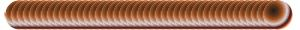
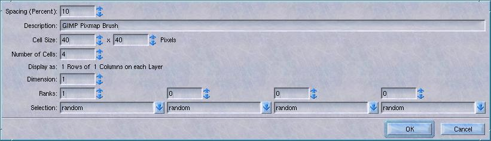
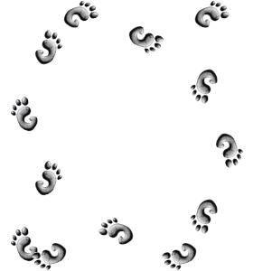

A pixmap brush is an image, with both shape and color, that gets drawn with one of the paint tools. The pencil draws the pixmap with a single click. The paintbrush does the same with some extra options. The airbrush allows you to do levels of transparency for the pixmap brush. Even the eraser can be made to erase segments in the shape of the pixmap.
An image pipe is a series of pixmap brushes combined into one, so that one or more of the pixmaps from the image pipe is drawn as you click or drag the mouse.
100 percent spacing
150 percent spacing

20 percent spacing
Both the image pipe and the pixmap brushes are made as images in GIMP. A simple pixmap brush has one layer, and an image pipe has several. Both images need to be partly transparent, with alpha channels on all layers and no background. You save an image as type .gpb for a pixmap brush, .gih for an imagemap brush. GIMP searches $HOME/.gimp-1.1/brushes/ for a user's customized brushes.
When you save an image in either format, a dialog box comes up. For pixmap brushes, this dialog is simple. It asks you for a name for the brush and a default spacing. The name is simply the description that will appear in the brushes dialog when that brush is selected. The spacing determines how close together the images are.
A pixmap brush with 100% spacing will draw a bunch of pixmaps with touching borders. More spacing will have a gap between the pixmaps, less will mean the pixmaps will overlap. See the examples above.
The options for an image pipe are a bit more complicated. Let's take a simple image with four layers. The layers look like above.
Click on the example above to download the GIMP file.

When I try to save this image as type "GIH", I get this dialog box: (Image above)
There's a lot of options here. Here's a list of what the simple ones mean:
- Spacing: Same meaning as for pixmap brushes above.
- Description: Same meaning as for pixmap brushes above.
- Cell Size: Gives width and height of the brush. Generally, you don't want to change these values.
- Number of Cells: Should match the number of layers in the image pipe.
The last three fields are a little harder to describe. If you want to give this image a one dimensional image pipe, you put '1' under Dimension and 4 under Ranks. This gives you four images in your image pipe, one of which will be chosen each time the brush touches. The last field, Selection, is about how that brush is chosen.
Let's say we save the image above as an image pipe with one dimension, four ranks and random selection. One of the images will be chosen for the brush at random. If we paint a short line with it (spacing 150), we get something like image above.
If instead, we chose incremental selection, the layers will be chosen in order from the top layer to the bottom, which would look like this.
An angular pipe choses its layer based on the angle the brush moves. The top layer covers 0 degrees (straight up) and the angles to either side. The layers going down are assigned counter clockwise, evenly dividing the number of degrees with the layer. So with four layers, "A" will go up, "B" right, "C" down and "D" left, like this.
Angular pipes can have more or less than four layers. If it was eight layers, they would cover, roughly, the eight compass points. Three layers would cover 120 degrees each, and so on.
There's a few more types of selection. One is 'velocity', and frankly I don't understand it. There's a few others that require a graphics tablet. If anyone gets me a graphics tablet, I promise I'll describe these selection options, too.
So, what can you do with a two, three or four dimensional image pipe? You can combine the selections. Take the gnome foot for example.
You can cut one out and make eight layers. Four layers are for the left foot going in each direction, four layers are for the right foot going in each direction.
You end up with a layer dialog that looks like image above.
Click on image above to download the GIMP image
Now, let's save this image with two dimensions. The first has angular selection and four ranks for that selection. That means these eight layers get divided up into four ranks of two layers. Then we select incremental selection with two ranks, which will divide each of those sets of two into sets of one.

So, what we have is feet which alternate left-right-left and follow the direction of the mouse. It looks a little like above.